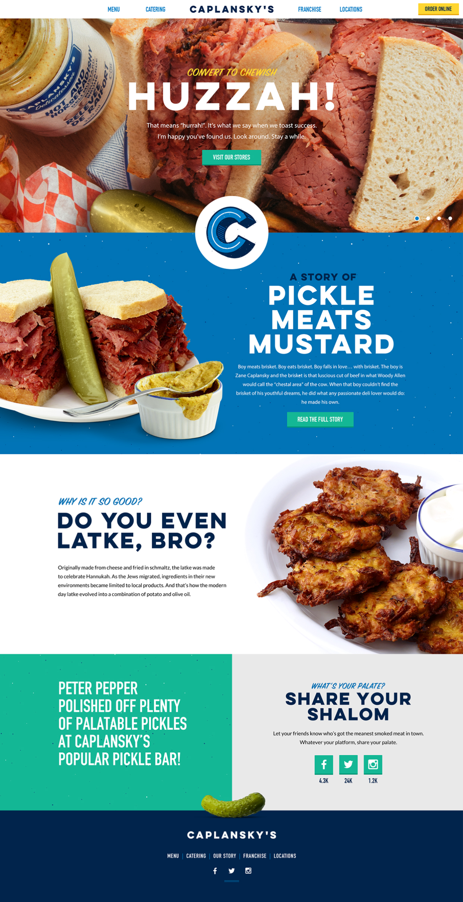
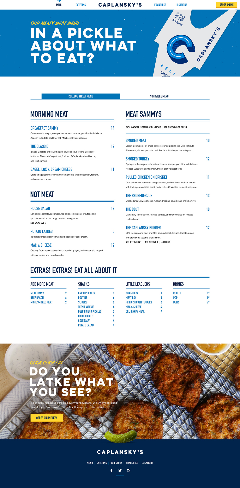
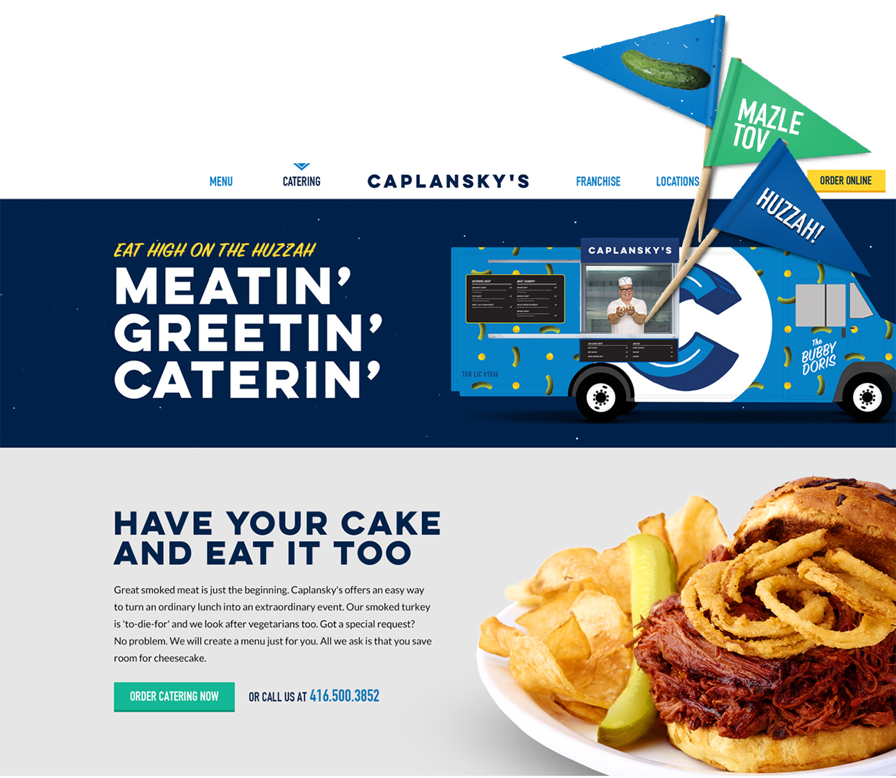

Caplansky's is more than just a deli restaurant. It's an experience – warmth and nostalgia and family on a platter – and owner Zane Caplansky would have it no other way.
Communicating Zane's BIG personality online required big visuals, big type and big fun! From large overflowing presentations of the food to quirky limericks and conversational injection of Hebrew, Caplanskys.com captures the love for food and people that Zane holds true to his heart and serves up on his plates.
  